Лекция 25. Усилители деятельности. Этапы цивилизации. Прогноз будущего
Так как человек проигрывает множеству существ, живущих на Земле, то он постоянно находится в опасности. Чтобы избежать гибели, человек стал пользоваться орудиями труда,
усилителями своих способностей. Автомобиль - для быстрого передвижения, кран - для увеличения силы, очки - для того, чтобы дальше видеть.
Всё это характеризуется
коэффициентом усиления:\( \ КПД = \frac{Результат}{Затраты}. \) Затраты - это собственные усилия, вкладываемые человеком для получения нужного ему
конечного Результата.Так как нет смысла получать меньше, чем вложил, то мы стремимся сделать так, чтобы КПД был больше единицы. Это возможно только в том случае,
если использовать энергию из вне. Управляя небольшим усилием её потоком, человек получает результат бОльший, чем он вложил, получая КПД > 1. Чем больше КПД, тем выгоднее
использовать усилитель.
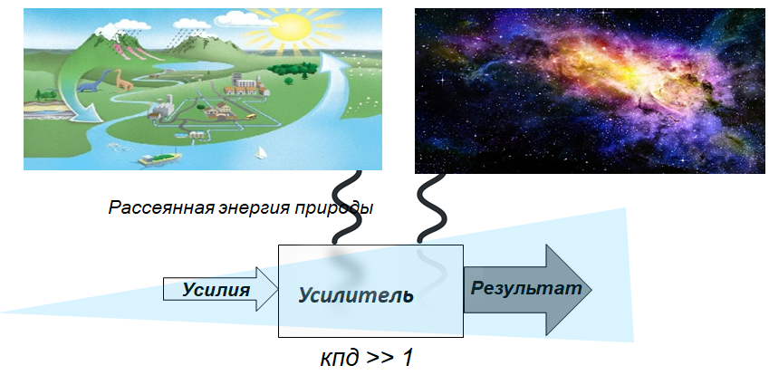
Лекарственная таблетка концентрирует полезные вещества, распределённые в природе, и позволяет быстро справиться в болезнью. Энергия Солнца,
накопленная в ископаемых растениях, позволяет огню костра, теплу и пару разрушить трудно усвояемые молекулярные связи. Еда легче усваивается, организм тратит меньше времени
на переваривание пищи, на извлечение энергии из молекул еды, деструктурируя их. Ровные и прямые дорожные магистрали упрощают передвижение в пространстве, станки быстрее
обрабатывают твёрдые предметы, дома согревают и спасают нас от диких зверей и непогоды, а одежда от холода. Весь искусственный мир состоит из устройств, защищающих нас от
дикой природы, благодаря которым мы живём и развиваемся. По одиночке каждый из нас вне общества не значит ничего. Современный человек живет в защитной
оболочке цивилизации.
Но так было не всегда. История человечества, предполагают учёные, начиналась с жестокой борьбы за жизнь нескольких групп людей в Африке. Человек был один на один
с природой. Или лев победит тебя, или ты его. Пищу надо было найти, добыть, надеясь только на собственные силы. Риск погибнуть можно оценить, как 50:50.
Значение коэффициента усиления минимально, мы примем его за единицу. Человечество в состоянии дикого общества находилось очень продолжительное время,
по крайней мере до тех пор, пока какой-то человек не захотел, чтобы «еда была всегда рядом и за ней не надо было бегать». Это была гениальная идея, но вряд ли её сразу
поняли соплеменники изобретателя.
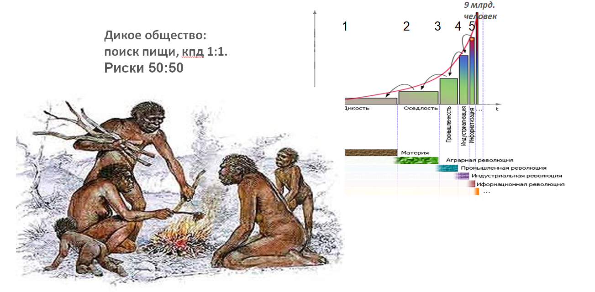
Однако если посадить зёрнышко около жилья, охранять его, вовремя поливать, удобрять почву, обеспечить освещение, то осенью за едой никуда бежать уже не надо,
урожай будет ждать вас сам у дома.
Если зёрнышко посадить весной, то осенью с выросшего колоска можно собрать 30 зёрен. Если 15 зёрен из них съесть, а 15 зёрен посадить в землю снова, то урожай на следующий год составит 450 зёрен.
Два коэффициента в этом расчете определяют рост запасов. В нашем случае коэффициент усиления Ку = 30:1.Он обусловлен технологиями, умениями, производительностью труда, климатом. Второй коэффициент - «соотношение пассивов и активов»,
Кпа = 50:50. Половина урожая идет на сохранение жизни здесь и сейчас (пассив), вторая половина (актив) идет на развитие и является вкладом в будущее,
это отложенное потребление. Повторяя действия из года в год, мы получаем рост запасов, которые К. Маркс назвал в последствии капиталом.
Задания
Продолжите расчет и нарисуйте график количества накопленных зёрен от времени. Выведите формулу роста запасов.
Проведите расчет роста запасов для разных значений Ку и Кпа. Сравните графики.
Сравните два графика с одинаковыми Ку и Кпа, но сдвинутыми друг относительно друга во времени. Как нарастает отставание по вертикали одного графика от другого
(сравните отставание на трех моментах времени, равноотстоящих друг от друга)? Будет ли расстояние между графиками по вертикали расти неограниченно, если отставание
по горизонтали составит всего 1 секунду? Какова цена времени?
По какой траектории (Ку и Кпа) надо двигаться, чтобы один график догнал другой в предыдущем случае, отстав от него на
время Δt? Сравните время задержки одного графика относительно другого. Определите значения коэффициентов и время, требуемое на ликвидацию отставания.
Опишите варианты экономической политики страны, основанной на значениях параметров Ку и Кпа, которая осуществляет рывок в своем развитии.
Какие технические, социальные меры должны быть предприняты для опережающего развития?
Как влияет развитие технологий на поведение графика роста запасов?
Смоделируйте ситуацию развития двух сообществ, при которой более развитое сообщество отберет запасы у менее развитого в результате военных действий.
Гениальная идея осёдлости дала начало первой технологической революции, скачку в развитии человечества. Из недр дикого общества появилось аграрное общество,
которое стало использовать собственный потенциал развития. То, что получилось у одного, было быстро перенято любопытными соплеменниками.
Достаточно сравнить урожай двух аграриев, чтобы понять, чьи орудия труда лучше, в чём преимущества в расположении участка, как правильно поливать растения.
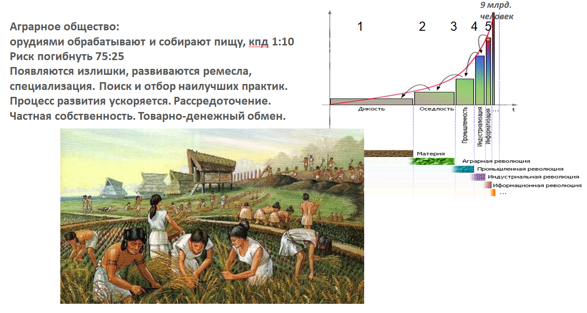
Сравнения различий и сходств дают прекрасную информацию для развития технологий. Применение даже простейших орудий увеличивает результативность ручного труда
в 10 раз - рыхлить палкой почву легче и быстрее, чем руками. Совершенствовать орудия выгоднее, чем интенсифицировать собственный труд, поэтому путь развития
технологий более эффективен. К примеру, оборона Сиракуз механизмами Архимеда сделала её упорнее в 10 раз.
В какой-то момент оказалось, что излишки от обработки земли у более догадливого агрария стали таковы, что он уже мог передавать их менее удачливому и менее умному
соплеменнику за часть выполняемой им работы - полив растений, помощь по дому, охрану участка от других соплеменников. Возникает разделение труда. Часть зерновых излишков
можно также обменять на мясо у жителей горных или засушливых районов, где трудно культивировать растения. Обмен половины одного мешка зерна на три из семи частей барана
требует изобретения обыкновенных дробей (1/2, 3/7 и так далее) и абстрактного эквивалента товара, денег. Деньгами стали служить мало портящиеся и редко встречающиеся,
а потому ценные, предметы, которые к тому же хорошо делились на любые части. Удобно выделить нужное количество мелких ракушек, которые легко пересчитать. Удобно отрубить
от слитка золота или серебра 1/6 или 2/3 его части (вспомните слово «рубль»). Возникает товарный обмен. Так как появляются излишки, то люди чувствуют себя чуть увереннее
и начинают жить на достаточном расстоянии друг от друга. Дикие звери отступают в леса, а разрастающиеся поля требуют новых площадей. Ходить из одного общего места
жительства к своему дальнему полю долго. Удобнее всего жить посредине поля, любая точка которого будет достижима из его центра одинаково. И тем не менее один землепашец
от другого все равно селился не так уж и далеко, чтобы успеть добежать до подмоги в случае нападения врага. Дать отпор, защититься вместе легче. Возникают силы взаимного
притяжения и отталкивания хозяйств. А появление связей между элементами порождает, как и положено, определённую систему. Вид аграрного поселения, архитектура дома
предопределены возникшими обстоятельствами и технологией. Площадей в сельской местности много, поэтому сельский дом, хозяйственные постройки росли вширь. Население
с появлением излишков растет, те, кто страдают из-за скученности на ограниченной площади, уходят в отдаленные свободные местности. Захват новых территорий при
целесообразности и возможности осуществления этого - закон природы.
Задания
Нарисуйте расположение полей и жилья на территории сельского поселения согласно высказанным соображениям. Подобное распределение участков соответствует теории
центральных мест Кристаллера и повсеместно встречается в природе.
Нарисуйте типовой сельский дом и городское жилье. Сравните их. Запишите их сходства и различия в тетради в виде таблицы.
Загрузите упражнение с сайта. На компьютерной модели проследите за геометрией образования систем из сообществ под воздействием сил взаимного притяжения
и отталкивания.
Перечислите базовые природные элементы, влияющие на эффективность жизни в определенной местности.
Перечислите простейшие механизмы, известные вам из курса физики. Запишите законы из действия. Обозначьте место приложения входного усилия и место,
где образуется его результат. Обоснуйте значения КПД от их применения.
Как провести каналы для орошения между соседними полями, уменьшив их общую длину (задача Штейнера о минимальном дереве)?
Из-за распределённости населения по большой территории и особенностей климата в разной местности производится различная продукция - зерно в равнинной лесной и степной
местности, мясо и шерсть в горной и степной, рыба - на побережьях рек, озёр, морей. Время от времени для того чтобы обменять излишки продукции своего хозяйства на другие
полезные продукты, производимые в другом хозяйстве, приходилось встречаться на какой-то нейтральной территории. Так как в целом первоначально местность была достаточно
дикой и непроходимой, то контакт происходил по рекам, по глади вод которых передвигаться было легче всего. Удобные, а потому постоянные места торга разрастались,
становились городами по берегам больших и разветвлённых рек. Постепенно орудия труда отбирались в пользу лучших, излишки продукции росли, поэтому появилась возможность
выделить и прокормить специальных людей, которые могли хорошо изготавливать такие орудия. Так возникают ремесла. Труд кузнеца, ткача, лекаря не требует больших площадей,
как у агрария, поэтому силы притяжения у них будут преобладать над силами отталкивания. Ремесленники объединяются в города, так как сбыт здесь упрощён, именно сюда
приезжают селяне для обмена своей продукцией.
Обычно город стоит на берегу речной транспортной артерии и на возвышении, чтобы издалека увидеть неприятеля. Жители города собирают деньги на совместное строительство
крепостных стен, так как одному жителю такое укрепление создать не под силу. Стена - сооружение дорогое, поэтому важна оптимальная форма стен - окружность, которая дает
максимум огороженной площади при заданном периметре.
Задания
Разделите размер охраняемой крепостными стенами площади города на периметр. Как меняется эффективность этой меры с увеличением размеров города?
Как должны располагаться улицы города внутри крепостных стен, чтобы суммарно переходы из любого места в любое другое место внутри города были минимальны
при заданной протяженности улиц? Где в этом смысле в городе расположено самое удобное место?
Длина извилистых рек со своими притоками и площадь их водного бассейна связаны параметром Хэка, равном 0.68 и говорящим о доступности воды на территории.
Постройте имитацию и выясните на компьютерном эксперименте, какова средняя длина пути от точки суши на такой территории до воды.
Задача о перколяции В.И. Арнольда. Случайно расположенные на квадрате со стороной L N окружностей радиуса R при небольших N и R не пересекаются.
Используя компьютерную имитацию, сформулируйте закон: при каких соотношениях L, R, N возникает возможность пересечь по соприкасающимся и пересекающимся окружностям
квадрат от одной стенки до другой? Что изменится, если вместо квадрата взять большой круг?
В центре города возникает рыночная площадь, где по специальным дням происходит торговля товарами, привозимыми из его окрестностей. Ворота в город на этот случай открываются.
На ночь ворота закрывались и охранялись специальными людьми, стражей, которая оплачивалась из общегородских денег. В середине города находится источник воды, так как именно
здесь он одновременно доступнее для всех жителей города. Даже сейчас можно увидеть посреди города центральную площадь и фонтан на ней.
Поскольку надо скидываться на общие нужды, то возникает городская казна и распоряжающееся ей доверенное лицо - мэр города. Казна хранится в общественном доме, стоящем на
главной площади, - мэрии, ратуше. Для предупреждения от нападения врагов и распространения пожаров ратушу делали самым высоким местом в городе. Перед ней собирался народ для
обсуждения общих вопросов и празднований. На ратуше были единственные (потому что дорогие) часы в городе, естественно с боем, чтобы все жители, на деньги которых они были
установлены, на слух могли ориентироваться во времени. Общее время позволяло синхронизировать связи жителей. Начинает оформляться центр города, от которого по радиусам
расходились улицы пекарей, кузнецов, рыбаков, ткачей, названия которых в старинных городах сохранились до сих пор. Сохранилось и радиальное расположение улиц.
В надежде на преданность ремесленники старались передавать свои секреты мастерства ближайшим родственникам, которые поэтому селились рядом, по соседству, так чтобы
сохранить тайны профессии. На нижнем этаже дома была мастерская для удобства торговли, которая занимала сама по себе немного места, над дверями которой висела реклама
производимого товара (сапог, булка, кружка). Второй укромный этаж предназначался для жилья семьи ремесленника. Если появлялись дети, то надстраивался еще один этаж повыше.
На последнем этаже было выгодно держать запасы сырья, и подальше от посторонних глаз, и не так часто надо было за ним лазить. Чтобы можно было быстро поднять большой объём
разово закупленного сырья на верхний этаж, в оконный проём последнего этажа высовывали кран-балку. На городской площади экономили, поэтому дом горожанина рос вверх.
А за лишнюю площадь надо было вносить дополнительные средства на строительство городских стен. Дома ставили впритык друг к другу, но зато из камня, чтобы избежать их
утраты от частых пожаров. Материал для строительства дешевле было использовать из той местности, где находился сам город: вдоль полноводных рек в лесной местности - дерево,
в горах и вдоль морских побережий - камень.
Важнейшее изобретение, предохранявшее скученно живущее население от инфекций, - канализация. Шляпа прохожего появилась в результате того, что содержимое ночного горшка
утром жителями выливалось на улицу. Так как город был на холме, то все это текло вниз, в ров за городом, земля которого была использована для укрепления стен.
В летописях тех лет сохранились воспоминания о том, что запах от города обнаруживался путешественниками задолго до появления самого города на горизонте.
Логично, что улицы стали мостить, делая в середине проезда углубление, - использовали камень или дерево, что именно в данной местности было в избытке.
В конце концов жители стали складываться на подземную канализацию, что резко улучшило эпидемиологическую обстановку в городе. Возникли специальные люди - золотари,
которым платили из общей казны. Появился налог, который был привязан к количеству домочадцев, к площади дома, к количеству труб, окон в доме.
Сплачиваясь общими интересами и заботами городское население формировало общность. Процесс объединения городов перед лицом внешних опасностей расширялся, если не преобладали
силы отталкивания и вражды. Так как вместе обороняться было легче и эффективнее, то наблюдалось возникновение союзов, рост государств, объединение территорий, этносов.
Логично, что города возникали на расстоянии дневного перехода путешественника. Особенно быстро объединение происходит, если облегчены торговые пути (реки, побережья) - рост
торговли делает население богаче, это его сплачивает от нападения голодных варваров. Вдоль Волги в древности возникла Гардарика - государство с множеством городов по берегам
великой реки. По ней же прошёл великий путь из варяг в греки. По рекам Кама, Урал, Белая шел путь обмена металлами Востока на пушнину Севера.
Задания
Загрузите с сайта упражнение «Логистика войны». Просчитайте радиус достижимости военных походов, характерное время ведения войны.
Загрузите упражнение с сайта. Промоделируйте развитие территории (расположение городов, их населенность, транспортная сеть) при задании ее особенностей
(рек, гор, плодородных земель, климата, полезных ископаемых). Объясните результаты.
Посетите краеведческий музей. Посмотрите, какие предметы удалось раскопать археологам в вашей местности, где они были сделаны? Прочертите и обоснуйте
возможные торговые пути древности своего города на карте.
Составьте список городов и поселений вашей местности, укажите количество жителей в каждом. Разбейте их на группы по количеству жителей. Постройте график
количества населенных пунктов каждого типа от количества жителей.
По карте измерьте среднее расстояние между поселениями одного типа в вашей местности. Узнайте суммарную длину дорог каждой категории. Какова связь между
типом населенного пункта, средним расстоянием между городами, длиной имеющихся дорог?
Разумеется, огромную роль в расселении растущего населения играет климат, конфигурация гор и побережий, естественный ландшафт. Трудно преодолимые складки на местности
(горы, овраги, реки, пустыни) создавали естественные границы между общностями. Тип производимой продукции повторял границы расселения этносов и наций по складкам местности,
лесам, горам, снежному покрову. Сплачиваться было выгодно из-за растущей специализации. Укрепляя связи, люди повышали КПД населяемого ими края, от этого снова быстрее
развивались и распространялись технологии. Это называется синергетический эффект. В сельской местности навыки и умения жителя универсальны. Он может и построить избу, и
вспахать поле, и добыть топливо, и воспитать детей, и сконструировать телегу. Но всё это делается упрощенно, на примитивном уровне. В городе навыки оттачиваются лучше,
но они узко специализированы из-за тесных связей.
По приближённым расчётам второй цивилизационный этап просуществовал в два раза меньше времени, чем первый, но имел коэффициент усиления в 10 раз больший,
чем Ку первого этапа. При этом риск погибнуть сокращался примерно в два раза 25:75.
Кузнец, делая лопату, конечно постепенно производит отбор её формы, прислушиваясь к покупателям, но отдельный удачный ручной удар молотом всё равно в точности повторить
не удаётся. Зато машина, ударяя раз за разом по листу металла, делает тираж идеальным. Экономия ручного труда при замене на машинный повышает Ку,
скорость и количество производимого товара растет, при том что его стоимость падает. Появление машин ознаменовало появление промышленного общества.
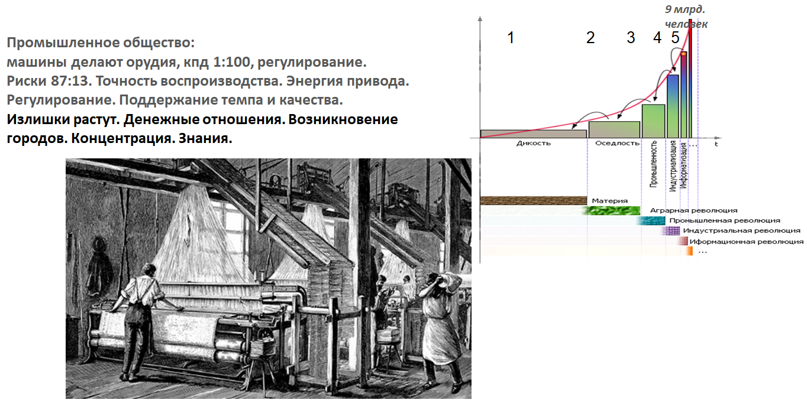
Значение Кy по сравнению с аграрным обществом снова возросло за счет процесса механизации в 10 раз, а риски снова уменьшились вдвое, став 12:88.
Машины стали делать орудия, с помощью которых добывалось то, что мы с вами непосредственно потребляем. Сами орудия и машины - это только средства добычи питания и
непосредственно мы их не употребляем. Но машины стабилизируют производство орудий, а орудия стабилизируют процесс производства питания. Стабилизация снижает риски
гибели человека из-за неудачи.
Первые машины использовали энергию потока реки, которая вращала водяное колесо, и поэтому находились вблизи рек на расстоянии приводного ремня. Одно колесо
энергией реки заменяло энергию 30-60 рабочих.Но то, что зимой реки замерзали, напор воды менялся, было неудобно. Применение энергии пара устранило эти
недостатки. Машина теперь могла быть установлена там, где есть сырьё или законсервированная энергия (дрова, уголь), и даже могла сама передвигаться в пространстве.
Паровой двигатель по мощности заменял уже 500-600 рабочих. За счет изобретения Джеймсом Уаттом, Иваном Ползуновым автоматических регуляторов машина могла неограниченно
долго без человека поддерживать постоянный темп производства и качество результата. Энергию пара можно делить, регулировать её количество, перемещать её источник.
Однако в промышленную эпоху машины применялись в основном в одиночку или параллельно во множестве одного типа (ткацкий цех).
Благодаря энергии пара стала возможна концентрация промышленности в выгодных местах добычи топлива или сырья для производства товара, что усилило влияние и рост городов,
как промышленных центров. Высокая плотность населения и концентрация финансов в городах привели к развитию водоснабжения, канализации, коммунальных удобств, что привлекало
туда ещё больше новых жителей. Процессы специализации, концентрации, роста ускорялись. Повышение КПД и Ку снова приводило к появлению всё
бОльшего количества излишков. Это позволило выделить из общества учёных и инженеров, которые не производя предметы первой необходимости, целенаправленно добывали новые
знания, приводящие к новым возможностям в производстве. Появлялось всё больше разнообразных специалистов, каждый из которых всё более профессионально выполнял свою
маленькую часть общего дела. Промышленный этап во времени оказался снова вдвое короче предыдущего в прямом соответствии с известным законом ускорения исторического
времени.
Узкая специализация машин и усложнение изделий привели к третьей научно-технической революции. Различные машины стали объединяться в конвейеры, технологические линии.
Каждая машина при этом выполняла идеально одну простую операцию и передавала эстафету другой. Обрабатываемое изделие постепенно двигалось от одного станка к другому по
конвейеру. К потребителю сложные изделия стали поступать быстро, с гарантией качества и в срок. Эти факторы существенно снижали цену при одновременном росте сложности
изделий.
Для производства и поддержания работы таких машин понадобились другие машины. Машины делают машины - девиз четвертого цивилизационного этапа.
Возникло индустриальное общество.
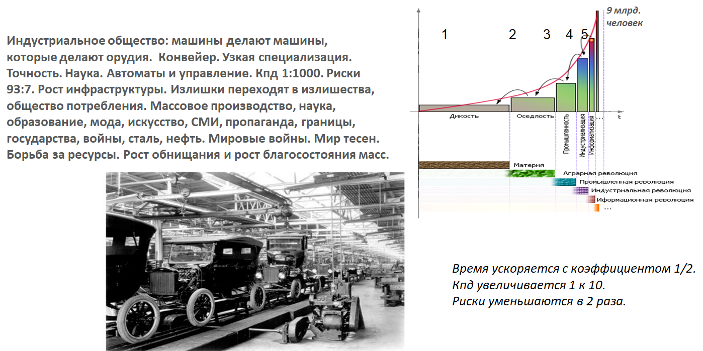
КПД машин достигло значения 1:1000. Риски неудачи деятельности и гибели человека уменьшились еще раз вдвое до
значения 7:93. Автомобиль развивает мощность 100 л.с., то есть эквивалентен усилию 3500 рабочих, самолет - 500 000 рабочих.
Автомобиль движется быстрее человека в 40 раз, самолет - в 200 раз, ракета - в 5500 раз.
Этот этап развития общества ознаменовался массовым производством и потреблением. Массовая мода, массовая культура, огромные тиражи газет и книг, фабрики кухни, реализм в
живописи, массовое образование, кино, типовое массовое строительство - всё это является следствием третьей инженерной идеи «конвейера». Товары, производимые большим
тиражом, удешевлялись, купить их стало проще, хотя сами они стали сложнее, появилось общество потребления.
Человечество научилось генерировать, преобразовывать и использовать электрическую энергию, которая легко передавалась по проводам. Гибкость и длина проводов, постоянство
подачи по ним энергии, способность её к делению вплоть до микротоков давало новые возможности организации общества, в том числе миниатюризации - больше функций в меньшем
объёме пространства. Вслед за индустрией общество становилось сетевым. Процесс механизации дополнился автоматизацией. Усложнение продукции привело к появлению управляющей
надстройки. Чтобы обеспечить синхронность работы множества отдельных станков и рабочих (в автомобиле 20 000 деталей), потребовался специальный управляющий - один
на 10 рабочих мест. На 10 управляющих потребовался ещё один управляющий второго уровня. И так далее. На фундаменте конвейера возникла пирамида управления,
которая сама непосредственно товар не производила, но его потребляла. Производства объединялись в индустриальные системы, сложность управления которыми росла. Возникали
суперзаводы - тракторостроительный, авиастроительный. Даже в сельской местности стали появляться птицефабрики, тепличные комбинаты, агрохолдинги. Города превращались в
агломерации. Понадобились мощные источники энергии. Наступила эра энергии углеводородов. Нефть и сталь стали «кровью и плотью» четвёртого цивилизационного этапа.
Автомобиль с запасом углеводородов на себе в состоянии удалиться на тысячу километров от источника энергии. Углубилась специализация, в мире появилось 50 000 профессий.
С точки зрения эффективности управления отдельные производственные пирамиды стали объединяться, подчиняясь единой цели, - крупный бизнес поглощал мелкий. Одновременно стала
происходить быстрая смена владельцев бизнеса. Непрофессиональное руководство не может долго генерировать ошибочные решения, отражающиеся на тысячах сотрудников индустриального
предприятия. Соответственно нашлись способы быстрой его смены - выборы, покупка и продажа акций, революции и перевороты, подкуп, шантаж, обман, пропаганда - человечество стало
изобретать новые изощрённые социальные механизмы. Между развитыми странами возрос масштаб войн из-за изобретения новых машин с бОльшим, чем ранее, коэффициентом усиления, в
данном случае убийства. Стрела кочевника убивает одного человека, американская атомная бомба убила движением руки пилота самолета сразу 80 000 человек в городах
Хиросима и Нагасаки.
Одновременно с этим добывать ресурсы на планете становится все сложнее - остаются самые неудобные и бедные месторождения. Войны и захват ресурсов приобретают всё более
ожесточённый и масштабный характер. Хотя процесс этот сложный. Например, те, кто ранее в результате развития получил преимущество, мог ослабеть под влиянием благополучия
от колониального захвата других стран. И те, кого постоянно грабили из-за их слабости, тоже не богатели, но выходили на грань отчаяния, решаясь на крайние меры.
Возникали террористические организации, которым при этом было доступно оружие с высоким КПД. Универсальность интерфейса «превращение денег в товары и обратно» усиливало
этот процесс.
Научно-техническая революция девяностых годов была вызвана информационным взрывом в обществе, то есть количеством возможных вариантов, которое надо было просмотреть и
продумать, перед тем как принять решение - где лучше произвести каждую деталь сложного устройства, как ее доставить к месту сборки, а потом к месту продажи, где продавать
и что выгоднее производить. Ошибаться нельзя, конкуренция быстро вытесняет товар с рынка. А новации мгновенно подхватываются остальными его участниками.
С развитием транспортных путей стало возможным развернуть производство в любой части мира. Изделия ещё более усложнились (50 миллиардов транзисторов в одном
современном микропроцессоре и до 2000 микрочипов в одном автомобиле). Количество элементов, для которых рассматривались решения, резко возросло с появлением интернета.
5 миллиардов его пользователей (60% мирового населения) оказались на расстоянии вытянутой руки от остальных. Каждая страна стала рассматриваться как единый
организм, который должен работать слаженно во всех его многочисленных частях, связанных информацией.
Унификация интерфейсов компьютеров и программного обеспечения привели к развёртыванию пятого цивилизационного этапа, информационного. Был запущен процесс
информатизации. Всё больше стала использоваться энергия движения электронов, тонкая химия, пластмассы, программирование, моделирование, виртуальные симуляции.
С 90-х годов 20-го века нанотехнологии влияют на атомную структуру вещества, на геном живых организмов.
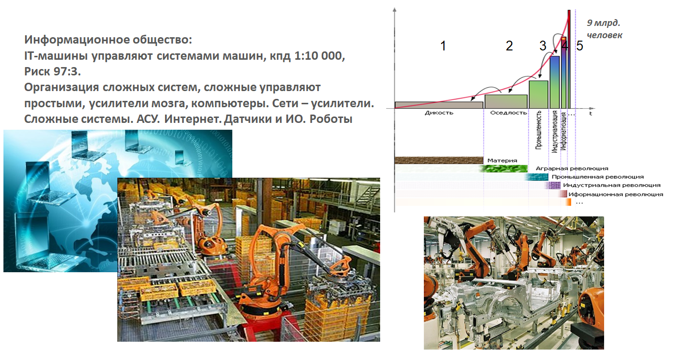
Информация ежедневно влияет на всё происходящее в мире. Самое критичное место в современном мире - управление, то есть умение распорядиться имеющимися ресурсами с
наилучшим результатом.
Информационные машины управляют энергетическими машинами, которые заставляют вращаться и перемещаться материальные части механических машин.
Сложилась структура: информация – энергия – вещество.
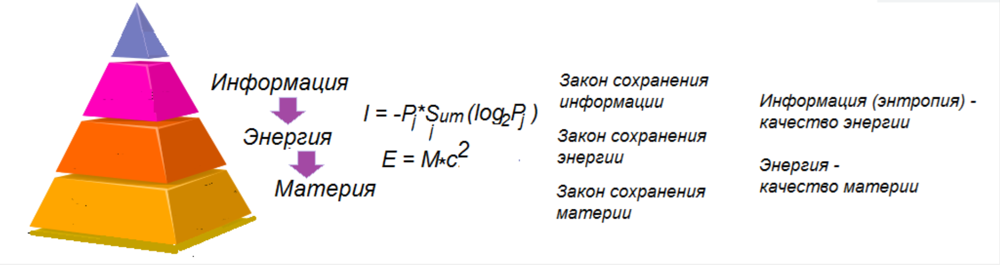
Теперь девиз «машины делают машины» дополнен: IT-машины управляют машинами, которые делают машины, которые делают орудия, чтобы обеспечить нас продуктами
первой необходимости, которые мы, наконец-то, непосредственно потребляем (еда, жильё, одежда, лекарства). Заметьте, большую часть произведенного мы непосредственно
не потребляем, но такая инфраструктура построена для того, чтобы сохранить и развить общество во всех его аспектах, снизить риски его гибели и застоя.
Именно благодаря ей на последнем этапе достигнут коэффициент усиления 1:10 000, время к предыдущему этапу снова ускорилось в 2 раза, риск гибели
уменьшился в 2 раза (3:97). Человечество перешло к поиску наилучшей организации себя и мира как сложной системы. Появились роботы, 3D-принтеры,
CRISP-технологии, искусственный интеллект, цифровые двойники, дополненная реальность, суперкомпьютеры, квантовые вычислители, сети, развитое программное обеспечение
для проектирования, моделирования и конструирования, огромная номенклатура микрочипов и элементов автоматики, датчики и сенсоры, электронные деньги, гиперзвуковой транспорт,
электронные микроскопы, спутниковые орбитальные группировки, персональная медицина, дистанционные технологии, глобальные навигационные системы, интернет вещей, сотовая связь.
Происходит переход от контроля электронов к контролю субатомных частиц.Для отражения мира в компьютере всё должно быть измерено, поэтому бурно происходит процесс цифровизации.
После этого измеренное может быть промоделировано и в рамках процесса интеллектуализации будет сделан прогноз будущего. После построения веера прогнозов появится возможность
управления будущим посредством выбора лучшей траектории из возможных построенных.
Отметим главное в описанной картине мира. Всё развивается постепенно, объективно и закономерно. Развитие идет с ускорением по этапам. В основе всего лежит вещество,
состояние и положение которого изменяется энергией.
Связь вещества и энергии показал ещё А. Эйнштейн в знаменитой формуле E=mc2. Вещество и энергия неотделимы друг от друга и составляют материю.
Информация характеризует качество энергии и указывает на распределение материи в пространстве. Информация тесно связана с вероятностью обнаружения материи в определённой
точке пространства. Информация связана с физическим понятием энтропии, которая характеризует качество энергии.
Поясним, как материя превращается в вероятность. Возьмём литр воды и растворим в ней 1 грамм соли. Затем отольём 0.01 часть раствора в отдельную банку и
дольём в неё снова чистой воды до литра. Очевидно, что в литре воды будет 0.01 грамма соли. Описанную процедуру надо проделать много раз.
Поскольку в какой-то момент в банке окажется одна молекула соли, то после очередного переливания сказать о наличии соли в воде можно, только используя понятие
вероятности: «Возможно, что в банке имеется соль с вероятностью P ».
Задания
Определите количество молекул соли NaCl в одном её грамме. Подсчитайте, сколько раз надо провести процедуру разведения, чтобы получить одну молекулу соли
на литр? Сколько раз надо провести процедуру, чтобы получить вероятность встречи молекулы соли в растворе, равную 10-6?
Найдите в интернете информацию о количестве зарегистрированных патентов, сайтов, книг в США, РФ, КНР, Японии, Германии. Найдите значения показателей
энергопотребления этих стран. Есть ли связь между информационными и энергетическими потоками? У какой страны выше информационное и энергетическое потребление на
душу населения?
Используя общий вывод, можно дать ответы на ряд вопросов. Например, какова стратегия развития человека?
Пример 1. Предположим, что есть две обезьяны, которые хотят съесть растущий высоко на дереве плод. Первая, чтобы достать плод, прыгает, карабкается, спешит,
рискует сорваться с высоты, тратит много лишних сил на достижение результата. Вторая, более ленивая, спокойно думает, как легче достичь своей цели. Для этого находит
пару ящиков, строит пирамиду, взбирается на неё и достает плод. Кто лучше проявил себя в этой ситуации с точки зрения развития? Каков КПД каждой обезьяны?
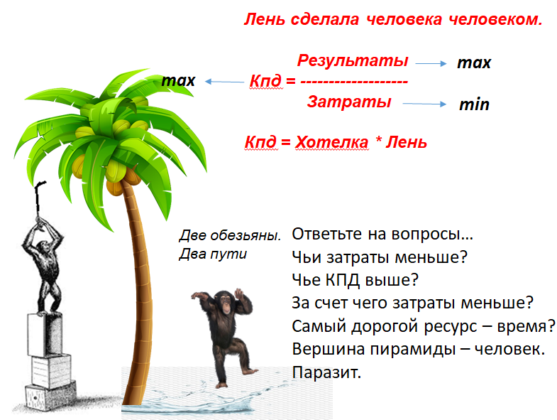
Пример 2. Чтобы получить больше денег за работу, которая оплачивается сдельно, надо достичь бОльших результатов. За квадратный метр убранной площади можно получить
1 рубль, убирая 100 м2, можно получить 100 рублей, а убирая 200 м2, можно получить 200 рублей. Однако можно
потратить своё время по-другому и построить машину, которая будет убирать площади вместо вас. Оплату за результат её работы будете получать вы, как изобретатель и владелец
машины, и при этом освободится ваше личное время. При единовременных затратах ежедневные результаты вырастут, КПД увеличится. В освободившееся у вас время вы снова
сможете построить ещё одну такую же машину, которая будет приносить вам ещё одну дополнительную оплату за сделанную работу.
Снова мы видим усилитель, машину, заменяющую человека, эффект от использования информации, производимой нашим мозгом, который может оказаться больше, чем эффект от ручного
труда. Снова наблюдается экспоненциальный рост результатов, развитие.
Без энергии движение и развитие вещества невозможно. Поэтому жизнь возникает вблизи источника энергии, около звезды. Но, получая энергию, её необходимо максимально
сбрасывать, простое накопление энергии бессмысленно. Это требование закона минимизации энергии. Согласно закона сохранения энергии сама энергия никуда не исчезает.
Меняется её качество, которое потребляет преобразователь энергии. Со временем она равномерно распределяется, размазывается в окружающем пространстве, собрать её снова
затруднительно. Энтропия растёт. То, что эффективнее перерабатывает энергию, повышая энтропию, то и получает преимущество в своём развитии. Прогресс состоит в максимизации
потока энергии, проходящем через существо. Энтропия – это качество энергии.
Энергия накапливается образованием связей и теряется при их разрушении. Сложное образуется соединением элементов в структуры, то есть образованием связей.
Поэтому сложное, как известно, легче ломается. Именно поэтому молекула легче поглощает и излучает энергию, чем более стабильный атом. С точки зрения структуры и энтропии
от атомов выгоднее перейти к молекулам. Природа уходит от усложнения атомов к усложнению системы из атомов, переходит с более низкого уровня организации материи на более
высокий.
Теперь понятен смысл жизни, он состоит в максимально эффективном процессе рассеивания энергии, благодаря которому будет достигнута максимально быстро высокая энтропия
системы в целом. Таким образом с повышением эффективности смерть становится необходимым явлением. Однако не расстраивайтесь, атомы, из которых мы состоим, не уничтожимы.
Распадаются только связи, чтобы снова образовать в дальнейшем новые структуры. Мы – дети звёзд, мы состоим из атомов, которые были когда-то в составе звёзд.
И питаемся мы не веществом, как многие неправильно думают. Иначе, поглощая каждый день обед, мы за год прибавляли бы в весе на 300 кг. В процессе жизни мы, поглощая вещество,
его же и исторгаем из организма, только в новом качестве, деструктурируя его. Разрывая отдельные лёгкие молекулярные связи, мы поглощаем выделяющуюся при этом энергию,
которую потом тратим на своё движение, рассеивая её в пространство. Можно сказать, что мы живём благодаря проходящему через нас потоку материи. Чем больше и более
эффективно мы пропускаем через себя материю (вещество, энергию, информацию), тем быстрее мы развиваемся, тем сложнее наша структура. Развитие - это усложнение структуры.
Иллюстрацией этого является преобразование человеком ландшафта и климата планеты, недоступное в таком количестве и качестве живому миру.
Каждый новый цивилизационный этап стабилизирует и защищает предыдущую структуру, находящуюся внутри него. Если отразить наше существо в виде оболочек, то окажется, что
в ядре находится самое необходимое и при этом достаточное для существования человека - питание, одежда, дом, лекарства. Всё остальное - стабилизаторы, уменьшающие риски
гибели и застоя цивилизации.
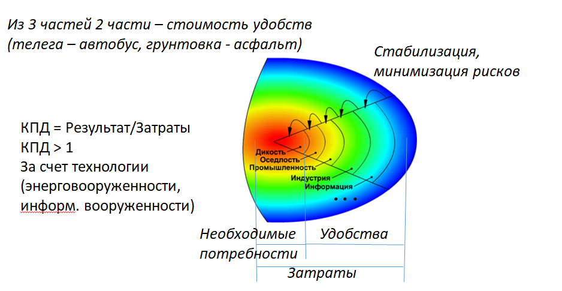
Они же проявляются в виде удобств, которые мы часто не замечаем. Например, две из трёх частей в оплате за транспорт - это плата за мягкий и
тёплый автобус вместо тряской и холодной телеги, асфальт вместо грязи, за то, что не придётся вытаскивать застрявшую телегу вручную, и только 30% - оплата за перемещение.
Необходимые потребности минимальны и закрываются в первую очередь, остальные излишества - плата за стабильность, за увеличение времени жизни, за снижение вероятности
(риска) погибнуть.
Посмотрите на роторно-конвейерный комбайн для добычи угля. Это гигант конца четвёртого цивилизационного этапа. Затраты на его изготовление составляют 100 миллионов
долларов, а размеры таковы, что собирают его сразу в угольном карьере, после чего он работает там непрерывно 70 лет. Высота комбайна - 22 этажа,
длина - 200 м, добыча - 80 000 тонн в сутки. Один ковш угля сразу заполняет один вагон. И таких ковшей на стреле - 20, которые непрерывно вгрызаются
в ландшафт по принципу ротора. Далее уголь по конвейерной ленте непрерывно поступает в вагоны, которые непрерывно подаются локомотивом под погрузку.
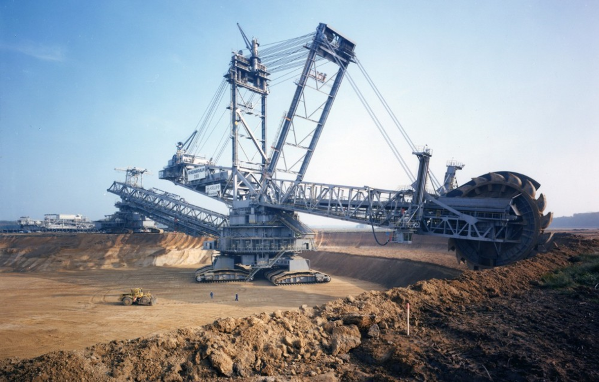
Горный роторный комбайн.
Затраты - 100 млн.$, 70 лет непрерывной работы, сборка на месте
Добыча - 80 000 тонн в сутки,
200 м, 22 этажа, 1 ковш - 1 вагон
Удобно, что есть аптека, но она ещё и настолько рядом, чтобы заболев, можно было бы успеть добежать до неё, не умерев. Избыточная сеть магазинов - это плата за удобство
«быть рядом», хотя ценник на плодоовощной базе значительно ниже стоимости аналогичного товара в магазине. Заметим, что скорость роста коэффициента усиления современной
цивилизации пока покрывает те излишества, которые человечество себе позволяет во всё бОльшей степени. Но платой за новые технологии являются кризисы: экологический,
климатический, экономический, энергетический, демографический, которые потребуют средств на их разрешение. Кризис – это чрезмерное поглощение ресурсов, переход к следующей
или откат к предыдущей точке равновесия. Кризисы – это приливы и отливы, поглощающие излишние ресурсы по сравнению с разумным
развитием (оптимальные Kу и Kпа).
Какие средства требуются на построение такой системы?
Первое, что очевидно, это иерархия структур, образуемая связями. Например, стоимость химических элементов (азот, железо, углерод, кислород, … ),
содержащихся в нашем организме, составляет 500$. Затраты на поддержание жизни за всё время нашего существования – 370 000$.
Поднимаясь выше, оценим стоимость человеческих органов: 370$ - волосы, 650$ - яйцеклетка, 5000$ - роговица, 30 000$; - костный мозг,
50 000$ - печень, 80 000$ - сердце, 120 000$ - почка.Один человек может быть донором 75 человек. То есть получается примерно около
1000$ за один уровень иерархии. Откуда следует вывод, что самое дорогое это связи, а не сами элементы (без которых связей нет). Новые (эмерджентные) свойства
системы определяются связями.
Ценность для нас также представляет пространство, которое переходит после смерти существа по наследству, но которое больше не делают. Экономисты оценивают сегодня среднюю
стоимость земного пространства как 1000 рублей за квадратный метр.
Время появляется в нашем распоряжении снова и снова, но оно не возвращается, поэтому оно ценнее. Физическое время цены не имеет, так как его невозможно передать
(цена бесконечная). Цена цивилизационного времени зависит от коэффициентов «усиления» и «пассивы/активы» и связей в обществе.
Неолитическая цивилизация длилась 55-65 веков, раннеклассовая - 29-33, античная - 16.5 веков, средневековая - 9, прединдустриальная - 3.8,
индустриальная - 2.4, предполагается, что постиндустриальная будет длиться 1.6 века до 2130 года. Откуда можно увидеть, что коэффициент сокращения
исторического времени равен 2.
Например, Киевская Русь существовала 700 лет, Московское царство - 300, Российская империя - 200, СССР - 70 лет.
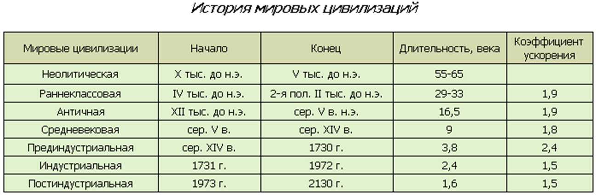
Поскольку ход времени ускоряется, то система не успевает уравновеситься, это выражается в росте мирового неравенства.
Измерение прогресса - важнейший вопрос для науки и поиска ответа на вопрос «туда ли мы идём». Развитие меряли потребляемой человечеством и отдельными странами
электроэнергией, количеством производимой продукции в целом, распределением доходов. Важным показателем является EROI (energy return on investment —
соотношение полученной энергии к затраченной, энергетическая рентабельность). Чтобы получить энергию, надо сначала сколько-то её затратить на поиск, добычу, сбор, доставку.
Самый лучший показатель EROI у гидроэнергетики 1:100, у ядерной энергии 1:50, худший - у солнечных батарей 1.6:1.
У потребителей лучший EROI у нефтяников 1.1:1, худший - у работников искусства 14:1, они практически чистые потребители энергии.
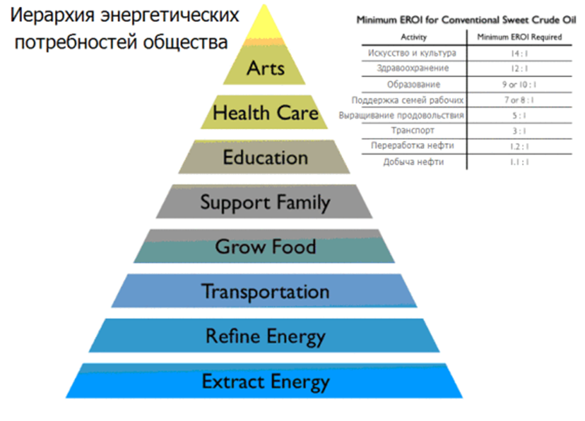
Поскольку технологии изобретаются для людей, усиливают людей и производятся людьми, то посмотрим на изменение численности населения N в мире. С.П. Капица
по историческим летописям воссоздал график кривой численности населения Земли во времени t, а по нему в книге «Общая теория развития человечества» вывел методом
регрессионного анализа закон развития человечества: dN/dt=k*N2 - скорость роста популяции людей на Земле пропорциональна квадрату их числа,
то есть зависит от количества взаимодействий между ними. «Квадрат числа людей – это число связей между ними, мера сложности системы «человечество».
Изменение количества элементов в системе пропорционально количеству связей в ней. Чем больше сложность, тем быстрее рост».
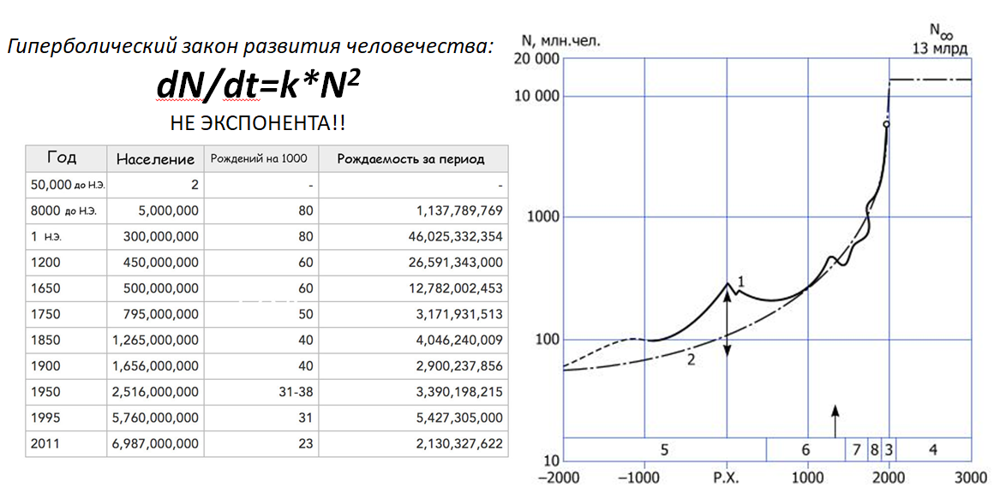
Математики называют такой закон гиперболическим, и по сравнению с экспоненциальным dN/dt=k*N он имеет предел роста, так как график N(t)
растёт быстрее. Пределом численности населения на планете при нынешних технологиях является 13 миллиардов человек. Оценка получена Нобелевским лауреатом П.Л. Капицей,
который умножил площадь планетарной суши на количество зеленой биомассы, производимой с единицы площади в результате получения ею энергии нашей звезды, и
разделил на потребность одного человека в энергии с учётом коэффициента потерь при преобразованиях.
По расчётам эта величина приходится на момент 2030-2035 годов, где кривая N(t) асимптотически устремляется в бесконечность. Такая точка называется
сингулярностью. Дальнейшее развитие процесса после достижения точки сингулярности непредсказуемо.
Следует иметь в виду, что кривая относительного прироста населения во времени в любой стране стандартно имеет колоколообразный вид и может быть составлена из разности двух
инвертированных логистических кривых рождения и смертности, разнесённых между собой во времени.
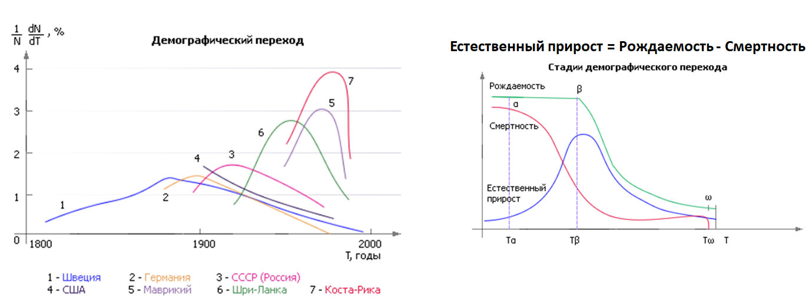
Падение смертности со временем происходит из-за технологических новаций (новые лекарства, высокий уровень жизни, просвещение). Падение рождаемости происходит также
из-за появления в стране новых технологий (жизнь становится насыщенней, легче, богаче и уже не требует пенсионной страховки старших граждан многочисленным
молодым поколением).
В европейских странах в силу климатических условий пик развития был ниже и прошёл раньше, в азиатских - пик острее, выше и происходит позже. Поэтому сумма демографических
кривых множества стран складывается в нарастающую во времени кривую. То есть общий рост населения в мире при падении численности населения в высокоразвитых
технологически странах объясняется ростом его в странах Азии и Африки, получающих высокопроизводительные технологии с задержкой.
Здесь нельзя не упомянуть физика Фримена Дайдсона, который обратил внимание на то, что освоение трёхмерного пространства со временем носит только степенной характер.
Если вы улетаете с материнской планеты со скоростью v, то в момент времени t вам доступна для нового освоения поверхность сферы с площадью,
пропорциональной R2, где R=v*t, но не более чем объём сферы m*R3. Сравнивая кривую роста численности населения и
квадратичную функцию, можно увидеть, что показательная функция рано или поздно (в зависимости от значений коэффициентов) обгонит степенную.
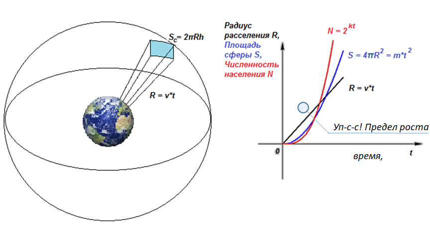
Расселение человечества в космосе пока имеет свой предел и может быть доступно только при новых, пока ещё неизвестных технологиях, обеспечивающих перемещение в
пространстве по показательному закону.
Задания
Выведите формулу количества связей в графе от числа его элементов, если все элементы соединены со всеми
При каких значениях k в законе Y=2kt численность населения Y стабильна, при каких растёт со временем t или падает. Каково необходимое количество детей в семье,
чтобы население страны росло? Каково необходимое число детей в семье, чтобы население страны увеличилось в 2 раза за 100 лет, за 30 лет?
Сложите две логистические кривые со сдвигом друг относительно друга по аргументу. Объясните вид получившейся итоговой кривой.
Просуммируйте графики роста населения нескольких стран, объясните рост суммарной кривой.
Постройте и сравните график роста численности человечества и график степенной функции освоения окружающего пространства.
Как видим, технологии и численность населения - взаимно обуславливающие друг друга величины. Объединяет их понятие связи. Смена технологий является причиной изменения
надстройки общества (культура, быт, управление, пропаганда). Смена цивилизационных этапов происходит скачком, называемым научно-технической революцией. Основное
направление прогрессивных изменений – коэффициент усиления, коэффициент пассивов/активов и снижение рисков в обществе за счет стабилизации процесса достижения результатов.
Каждый этап заканчивается кризисом из-за чрезмерного развития определённого направления, который разрешается в рамках следующего этапа. Общее развитие ограничено
поверхностью планеты и доступом к энергетическим ресурсам с учетом их качества (энтропии).
Главный результат эволюции – структуризация материи, которая проявляется в связях, иерархическом построении систем и измеряется энтропией (информацией).